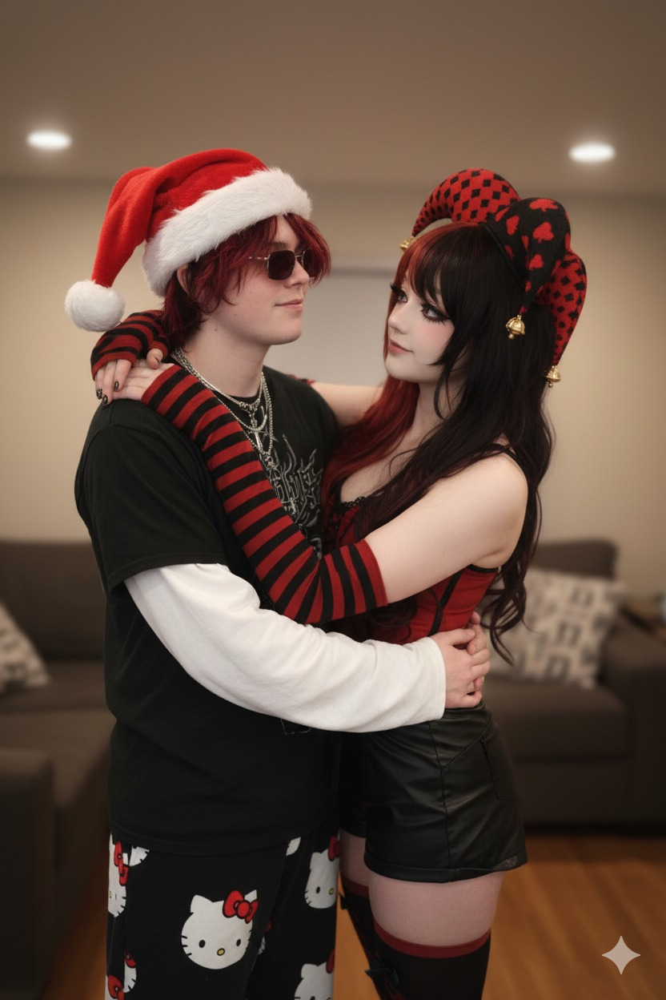
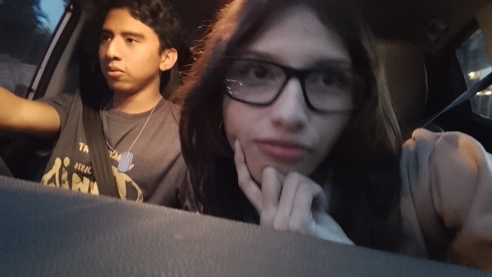
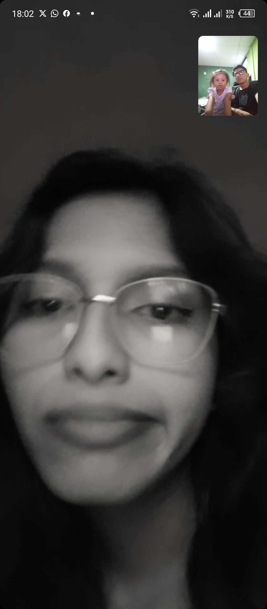
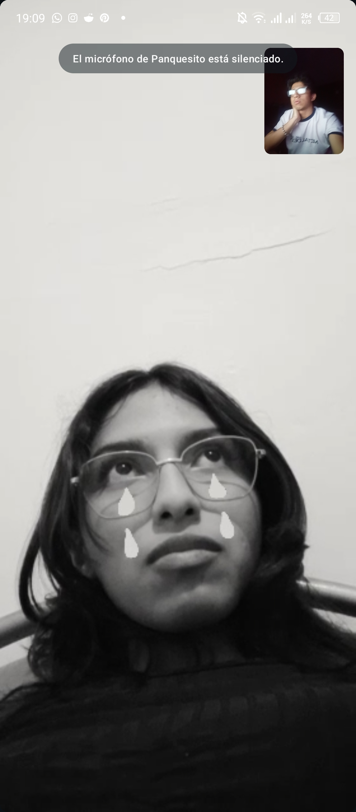
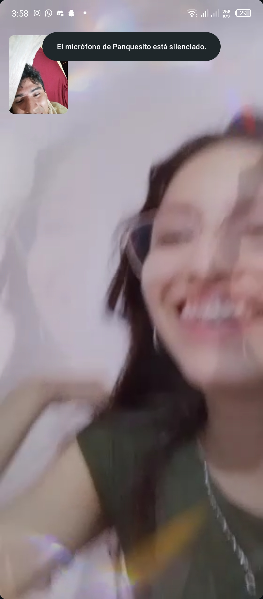

Cuando Dejemos de Hablar
Un espacio para recordar lo que fuimos
Si un día nuestras conversaciones
se quedan suspendidas en el aire
como polvo iluminado por una ventana,
y el silencio empieza a ocupar el espacio
donde antes cabían risas,
abre esto.
No lo abras con nostalgia,
ni con rabia,
ni buscando respuestas que ya no estén.
Ábrelo como quien abre una carta antigua
y reconoce su propia letra
en algo que ya no puede cambiar.
Si dejamos de hablar,
no fue porque no importaras.
Fue porque a veces la vida
desordena incluso lo que parecía claro,
y el tiempo no siempre sabe cuidar
lo que parecía claro
Hubo algo real aquí
No perfecto
No eterno quizá
Pero real
Me gustaste desde los primeros días que te vi,
cuando nada extraordinario ocurría
y aun así tu presencia hacía que el mundo
tuviera una temperatura distinta
Me gustaste en los silencios,
en las pausas,
en esas pequeñas cosas
que nadie más notaba
pero que para mí eran constelaciones con mil información
Si alguna vez dudas
si lo que sentí fue verdadero
recuerda esto:
No se mira así a alguien
si no se le quiere un poco más de lo que se dice.
y si tomamos caminos distintos,
pues esta bien nosotros sabíamos que esto llegaría
llegaría a su fin en algún momento
quiero que al menos te quede la certeza
de que hubo un tiempo
en el que fuiste alguien en quien confié demasiado
sin saberlo
Y yo fui feliz
solo por haberte encontrado.
Nuestros Recuerdos






